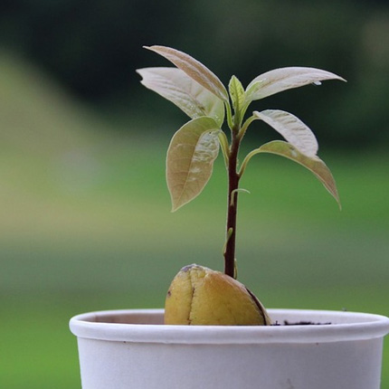

| Главная | Как вырастить лимон | Как вырастить киви | Как вырастить хурму | Как вырастить авокадо | Как вырастить манго |
Удалите с авокадо кожуру и извлеките косточку. Садить ее нужно в тот же день, тогда вероятность всхода будет гарантированной. Существуют три метода посадки косточки:
1.Неочищенная косточка сажается в почву (⅓ должна торчать сверху). Полив - один раз в неделю.
2.Сделать в косточке 3 дырочки при помощи спичек или зубочисток (ямки должны быть глубиной около трех миллиметров) и положить ее в стакан с водой. При этом участки с проколами не должны оставаться наверху, т.е. сухими.
3.Очистить косточку и поместить в стакан с водой, оставив на ⅓ сверху. Учитывайте, что предварительно очищенная косточка прорастет быстрее. К тому же, так вам будет удобнее следить за формированием корней и стеблей.

Сажать лучше косточку больших размеров - у таких больше сил для роста. Что касается воды, то в идеале она должна быть очищенная, но можно брать и отстоянную. Температура - комнатная. Многие рекомендуют кинуть в воду несколько таблеток активированного угля, чтобы проращивание было более быстрым. А вообще, с добавками или без них, косточка может дать росток и через одну неделю, и через два-три месяца, в зависимости от поры года. Весна считается наиболее благоприятным сезоном.
Сигналом, что косточку авокадо уже пора помещать в горшок с землей станет появившийся росток, который достиг длины около 3 см. Почву для горшка подбирайте рыхлую - косточка должна “дышать”. Также во избежание процессов гниения нельзя допускать застоев влаги - для этого нужно организовать качественный дренаж (высотой примерно 2 см). Сам горшок для косточки может быть компактным, все равно через год нужно будет пересаживать. Косточка должна на ⅓ торчать из субстрата. Для полива авокадо лучше брать очищенную воду.
Ставить горшок с саженцем нужно на солнечную сторону квартиры. Чтобы авокадо лучше развивалось, его можно подкармливать минеральными удобрениями. Если росток стал слишком длинным (это бывает из-за недостатка света), значит его надо чуть подрезать. Полив авокадо должен быть умеренным. Если почва увлажнена сантиметров на 5 от верха - этого достаточно.
Как уже упоминалось ранее, в один сосуд можно посадить пару-тройку косточек авокадо, чтобы создать из их ростков декоративное плетение. Главное, не затягивайте ростки очень туго.
Цветением авокадо порадует примерно к трем годам жизни. Соцветия растения представляют собой небольшие желтенькие цветочки. Если хотите, чтобы дерево начало давать плоды, вы должны продумать этот момент заранее и посадить несколько саженцев, чтобы они могли размножаться перекрестным опылением. Будет большим плюсом, если в летнюю пору вы сможете вывезти горшок с растением на садовый участок и ставить его на солнечной лужайке, притененной деревьями.
Авокадо, как и все растения, нуждается в грамотном уходе. А в неестественном для него месте обитания - так тем более. Так как авокадо - это обитатель тропиков, то в теплые периоды года растение чувствует себя замечательно. А вот в холода начинаются проблемы. Далее обо всем по порядку.
Самое лучшее место для горшка с авокадо - это подоконник, который смотрит на запад. Растение любит, когда на него попадает много света, тем не менее свет должен быть рассеянным. В принципе, авокадо будет развиваться и в тени, но вы же не хотите слабо растущий цветок с блеклыми листьями?
Авокадо будет хорошо себя чувствовать при комнатной температуре. А вот резких скачков температуры и сквозняков нужно избегать, иначе начнут опадать листья. Многие стараются летом вынести авокадо на веранду или на лоджию, думая, что экзотический друг будет рад теплу и солнцу. Но это не так. За пределами квартиры вы не сможете уследить за меняющейся температурой окружающей среды. В холодный сезон года показатели температуры не должны опускаться ниже 20°C. Среди ученых бытует мнение, что авокадо будет гарантированно плодоносить, если погрузить его в спячку (т.е. постепенно снижать температуру помещения до 12°C). Но на практике это непросто осуществить, особенно в домашних условиях.
Данное вечнозеленое растение привыкло к тропической влажности, а пересушенный воздух для него губителен. Таким образом, регулярные опрыскивания жизненно необходимы авокадо, но нужно следить, чтобы капли не попадали на дерево - это может спровоцировать “раны” на листьях. Увлажняйте воздух вокруг горшка или поставьте на подоконнике рядом с ним влажный мох в блюдце.
Уход за данным экзотическим представителем флоры представляет собой набор привычных садоводам действий, но с некоторой спецификой.
Полив авокадо должен быть регулярным и щедрым, но частить не стоит. Понять, пора поливать растение или нет, можно по состоянию верхнего слоя почвы. Увидели, что субстрат подсох? Подождите еще два-три дня и можно приступить к поливу. Грунт как раз успеет просохнуть полностью и переувлажнения не будет.
В холодный сезон года подкармливать авокадо не нужно. А вот с начала весны и до самого сентября растение можно удобрять органическими добавками широкого спектра. Если у вас есть подкормка для цитрусовых - ее тоже можно пустить в ход.
Первый год жизни авокадо характеризуются достаточно стремительным ростом. Пересадка будет необходима, когда длина ростка составит примерно 15 сантиметров. Молодое авокадо (до 4 лет) нужно пересаживать каждый год в весенний период. А взрослое деревце - где-то раз в три года. Обращайте внимание на грунт для растения. Авокадо любит рыхлую и воздушную почву слабой кислотности. Осуществляйте пересадку способом перевалки: аккуратно перенесите растение, не очищая корни от кома грунта.
Деревце авокадо с плотными глянцевыми листочками может стать достойным украшением интерьера. Но немного знаний в области цветоводства не помешают. По своей природе росток авокадо тянется в высоту. Чтобы растение было не вытянутым, а пушистым, словно крона дерева, молодые побеги надо подрезать. Но прищипыванием верхушек нужно заниматься только тогда, когда на стволе уже будет хотя бы десяток листиков. Боковые ветви будут быстрее развиваться, если вовремя подрезать верхушку авокадо. Когда же и на боковых вырастет достаточно листьев, можно подрезать и их.
Прищипывание авокадо проводится в начале марта. Пинцировка нужна не только для того, чтобы у дерева была пушистая крона, но и для комплексного улучшения развития растения. Какой формы будет крона вашего дерева авокадо - зависит только от ваших пожеланий и предпочтений.
Главные вредители, от которых чаще всего страдает авокадо - это паутинный клещ и щитовка. Данные насекомые широко изучены, и от них, в принципе, страдают все домашние растения в горшках. Клещ поедает листья растения, а также является переносчиком различных заболеваний, от которых могут пострадать и другие обитатели ваших подоконников. А щитовка высасывает все соки из растений. Для борьбы с данными паразитами лучше всего пользоваться инсектицидами, которые продаются в специализированных магазинах.
В процессе выращивания авокадо вы можете столкнуться и с другими проблемами. Например, пересохшие концы листьев. Подобное может произойти, если не соблюдать правила полива и увлажнения растения. Также листья могут начать опадать. Чаще всего эта неприятность происходит, если в квартире слишком прохладно или растение попадает под сквозняк. А, если вы заметили, что листочки авокадо стали тусклыми, значит деревцу мало света. Переставьте горшок на солнечную сторону или подберите хорошую светодиодную лампу, если сейчас зима.
Как только ваше деревце авокадо вытянется вверх примерно на 40-45 сантиметров, его можно пересадить в открытый грунт на вашем садовом участке. Чтобы новое место обитания не стало для растения стрессом, соблюдайте следующие несложные правила:
1.Вероятнее всего авокадо приживется в открытом грунте, если вы проживаете в южных широтах.
2.Организуйте для авокадо период постепенного привыкания к свежему воздуху. Для этого можно на протяжении полугодия выносить горшок с растением на веранду (но только в теплый сезон года).
3.Авокадо сможет пережить холодную зиму только если вы соорудите для него теплицу из поликарбоната и будете регулярно окучивать.
4.Если у вас изначально было желание вырастить дерево именно на участке, то покупайте авокадо первой расы (мексиканской). Данный сорт - самый холодостойкий и может спокойно выдержать понижение температуры до -5°C.